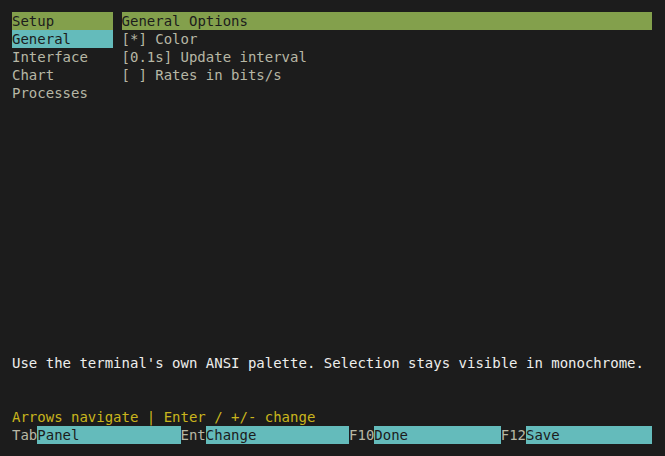
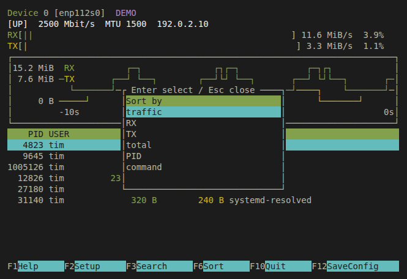

At home in your terminal.
Your network.
In plain sight.
See what’s flowing. Find what’s busy. A Linux network monitor with live graphs, process traffic, and the familiar feel of htop and nvtop.
Built in Rust Made for Linux GPLv3 licensed
Follow the interface.RX and TX from Linux kernel counters.
Find the process.Captured traffic, matched to socket owners.
Stay on the keyboard.Search, sort, switch. Keep your hands home.
Feels familiar.
Fits your workflow.
Keep it in a split pane or give it the whole screen. nwtop makes room for the traffic that matters, down to a 36 × 16 terminal.
Select a view to see the real interface.
/ Search the table
c Inspect connections
b Toggle bytes / bits
F12 Save your setup


Native terminal colors. Your theme comes with you.
Set up once.
Just run nwtop.
Build from source, install to your user directory, and give the optional capture helper the access it needs. After that, start nwtop as your regular user.
You’ll need Linux and Rust 1.88+. The commands here use Ubuntu 24.04 or newer.
What needs administrator access?
Installing libpcap and setting up the capture helper requires administrator authentication once. The terminal UI has no capabilities and runs without sudo. Interface counters also work without the helper.
Read how capture worksOpen source under the GNU GPLv3 or later. No GitHub account needed to clone.
# Capture runtime + capability tools
sudo apt install libpcap0.8t64 libcap2-bin
git clone https://github.com/itmitalles-de/nwtop.git
cd nwtop
./scripts/install.sh
./scripts/setup-capture.sh
# From now on, no sudo
~/.local/bin/nwtopnwtop --no-captureInterface monitoring without setup.Real counters.
Clear boundaries.
Interface rates come from Linux RX/TX counters. Process rates come from captured IP packets, matched to socket inodes and PIDs. Queue sizes never masquerade as traffic.
Short-lived, shared, or inaccessible sockets can remain unattributed. nwtop shows unavailable rates and dropped packets instead of inventing numbers.
Understand the measurements